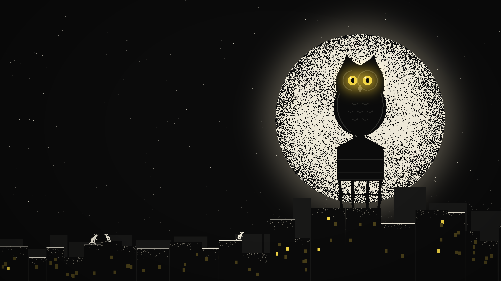
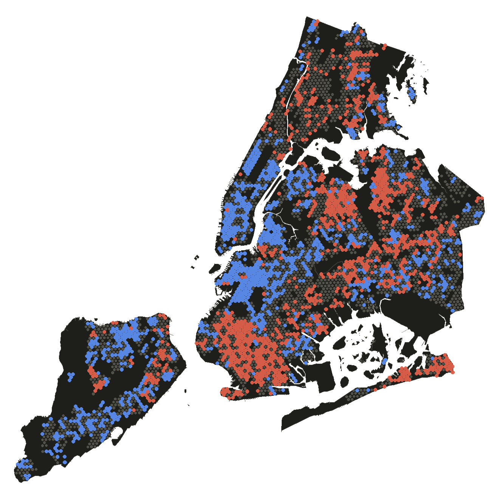
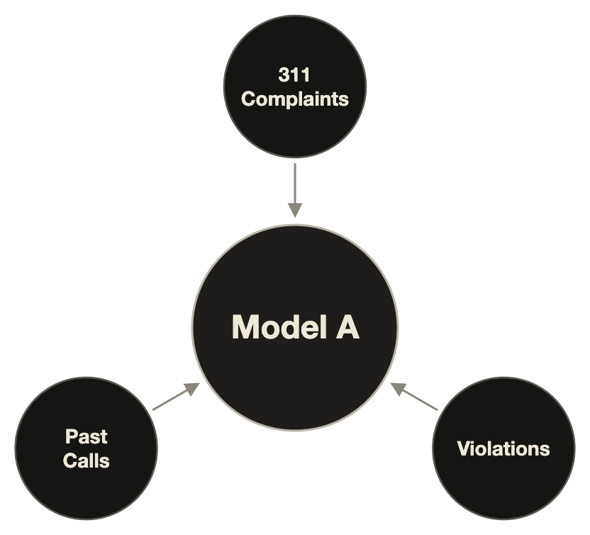
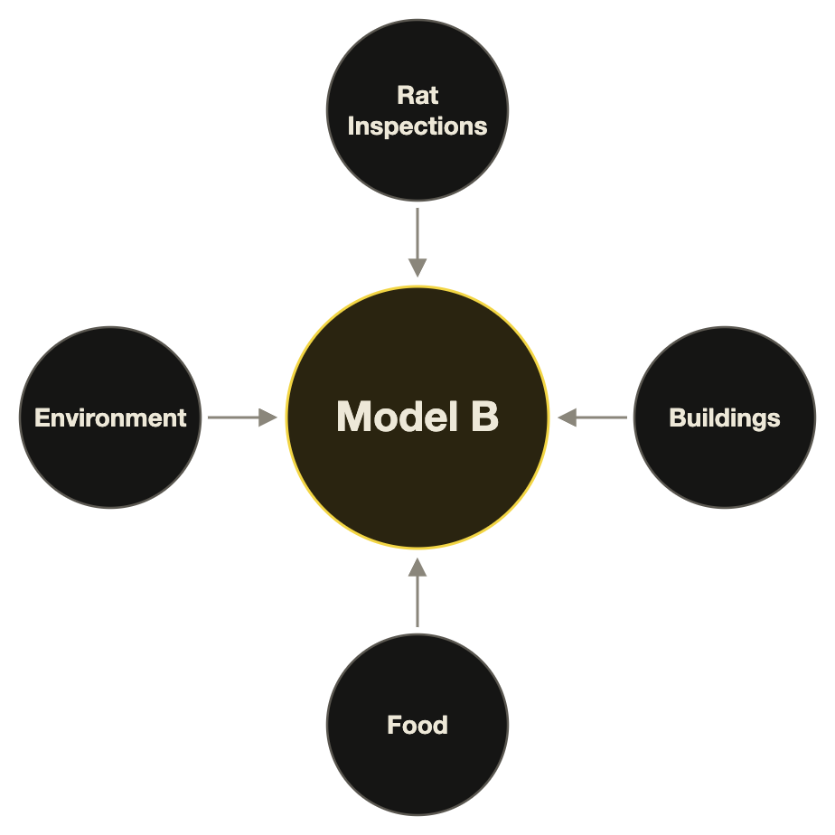
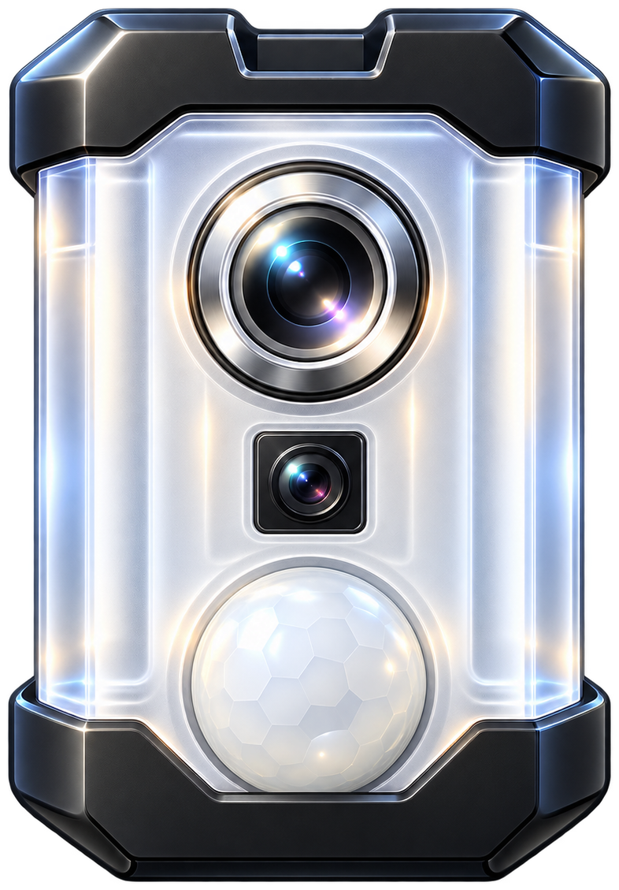

NightOwlPitch · DivHacks 2026
Use ←→ · F fullscreen · N notes
NYC · block by block · the rat patrol · NightOwl
● The Rat PatrolEst. DivHacks · MMXXVI
NightOwl
Nothing hides from the Owl.Finding the rats New York isn't looking for.

No. 001Fig. 01 · The watch
01 · The Problem
New York's rat map is
a map of who calls.
High-income, English-speaking blocks call the most.
76%
more complaints from the rich than the poor, for the same number of rats.
Richest vs poorest fifth of NYC blocks · 2015–2026
51%
more rat infestations on poor blocks than on rich ones.
Swept lots with active rats · 12.2% vs 8.1%
Exhibit A · By incomeExhibit B · By language, same income
Quieter phones. More rats.
| West VillageCrown Heights (South) | East Harlem (South)Jackson Heights |
|---|
| Median household income | $188k$84k | $39k$81k |
| Poverty rate | 6%17% | 31%13% |
| Homes with limited English | 1%5% | 16%25% |
| Rat complaints to 311per 1,000 residents, a year | 5.75.0 | 3.22.2 |
| Swept lots with ratsroutine block sweeps | 6.4%4.7% | 15.9%7.9% |
| 2.5× the rats, 44% fewer callsSame income. 1.7× the rats, 56% fewer calls |
NYC 311 · NYC Health sweeps · ACS 2024 (5-yr) · 2015–2026
The Scale
~150,000 rat inspections a year.
They go where the calls are.
Richer blocks that call more
Properties with rats21,400
Poorer blocks that call less
Properties with rats15,200
Blue gets 5× the inspections for 1.4× the rats.

Richer · more callsPoorer · fewer callsThe rest
…and it leaves 382 blocks behind.
The Silent Blocks
382
blocks where the rats are likely and the phones are quiet.
Silent means all four
- Rat risk in the top 40% of NYC blocks (Model B)
- Its 311 calls per resident rank at least 25 points (of 100) below its rat risk
- All 5 of 5 model copies agree
- At least 100 homes, so it's not a park or rail yard
What they look like
1.2Mpeople live on them
2×NYC's average rat risk, with under half its calls per resident
$62kmedian income (NYC: $90k)
17%homes with limited English (NYC: 10%)
02 · The Solution
Two models, one gap.

Model A · trained on 311 callsWhat the city hears
vs

Model B · trained on everything objectiveWhat's actually there
B high, A low: a silent block.
The Proof
Ten years of history.
Who finds more rats?
Inspected lots where rats were found · 2016–2026

The Owl
Meet the Owl.
A sensor that spots rats in any light, every night.
- i.
Costs
About $30, one inspector-hour.
- ii.
Lasts
Up to 6 weeks on watch, every night.
- iii.
Private by design
Classification runs on the device. No video leaves it: only a rat event (time, block, confidence) and a crop of the confirmed rat.
03 · What's Next
Rats are a warning light.
Rat
infestations
Health
24
Leptospirosiscases in NYC in 2023, a record. About 3 a year before 2021.NYC Health advisory, 2024
1 in 3
Asthmainner-city homes had rat allergen, linked to worse asthma in kids.Inner-City Asthma Study, 2003
72%
Depressionmore likely where rats are a big problem.Johns Hopkins · Baltimore, 2016
Home & street · swept buildings with rats vs without
2.8×
Moldthe mold violations per home.NYC HPD · NYC Health sweeps · 2023–25
2.3×
No heatthe heat and hot-water complaints per home.NYC 311 · 2023–25
1.8×
Illegal dumpingthe dumping complaints per property.NYC 311 · 2023–25
Then: the same method for mold, heat outages and dumping, anything the city only hears about through calls.
Try it yourself.
The Close
Nothing hides
from the Owl.
NightOwl turns silence into data,
and data into the next place to look.
● Thank youDivHacks 2026NYC, block by block
Q&A · The Crew
Four humans, one Owl.
Bruno
II · Hardware & assistant
Sanjavan
IV · Models & data
Q&A · B1 · Under the hood
The tools that let us see in the dark.
Models · hero
LightGBM × 2
Two gradient-boosted models, ten years of NYC data, tested on held-out districts.
Map grid
H3 hexagons
~350 m cells, 2–3 blocks
City data
NYC Open Data
3.1M inspections · 512K complaints
Detector
Rat detector V5
object detector · ~15 fps on the Pi
Node
Raspberry Pi 5
NoIR camera · PIR sensor
API
FastAPI
events · scores · Owl sites
Map
React · three.js
3D city, block by block
Assistant
Grok · xAI
20 tools, plain English
Messaging
Photon
the assistant on iMessage
Q&A · B2 · Backtest
The backtest, month by month.
Share of inspected lots with active rat signs · top 50 swept blocks · 3-month average
- 119 months, 2016–2026, each trained only on the past.
- Scored on routine sweeps, not complaint visits.
- Model B 19.5% vs 311 15.2%: won 108 of 119 months.
- Quiet blocks: 15.7% vs 8.8% for random picks.
Limit: covers blocks the city swept. It is not a citywide rat count.
Q&A · B3 · Equity evidence
Raw city data, no model.
- Per rat found, the richest fifth of blocks calls 1.8× as much as the poorest, and the most English-fluent fifth 2.2× the least.
- Same high rat risk: quiet blocks got 29 inspections per 100 properties in two years, loud ones 145.
- Routine sweeps do reach the poorest fifth most. The blind spot is poor and quiet.
- Research agrees: low-income, minority areas report less despite greater need (Kansas City, 2021).
A link with income and language, not proof of cause.
Q&A · B4 · Privacy
Bytes, not video.
- Frames stay on the Owl. By design, nothing is streamed or stored as video.
- An event is a time, a block, the class, and a confidence, plus a cropped photo only for a confirmed rat.
- The motion sensor wakes the camera. Otherwise it sleeps.
- Only rat events leave the Owl, never people.
- Unlike Flock or ShotSpotter-style systems, it records no people and no plates. It counts rats.
Q&A · B5 · Cost & hardware
About $30 an Owl.
- Demo Owl: Raspberry Pi 5, IMX219 NoIR night camera, HC-SR501 motion sensor, 850 nm IR light, 3D-printed case on a gooseneck mount.
- Motion wakes the camera. The detector runs on the device, about 15 frames a second.
- Production design: the same detector on a ~$14 ESP32-S3 camera board, about $30 per Owl.
- Up to 6 weeks on watch applies to the low-power production design, not the Pi 5 demo Owl.
- It mounts on street-tree guards, and the planner picks the exact tree.